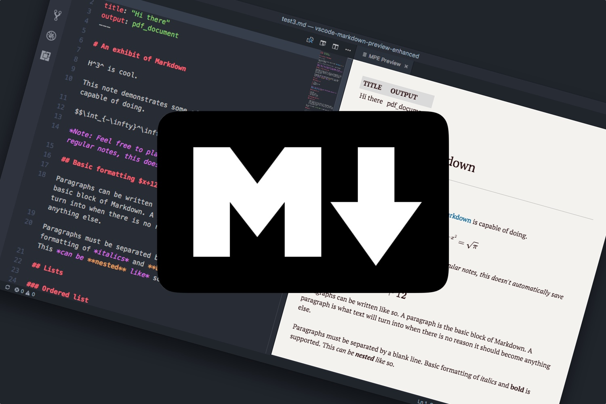

Markdown¶
Markdown is a markup language which can be used to simply and beautifully format text^[1], with a major advantage being that even when it is not rendered, it is easily readable by humans, unlike say, HTML. Another advantage to many in the sciences is that when one is using Jupyter notebooks to program in python, one can use markdown to embed formatted text in the notebook, making the code eminently readable. Indeed, it is for this reason that experimental logbooks are required to be prepared using markdown.
Provided below are some tips and tricks for preparing markdown content, but there are countless excellent resources2 on the web for learning markdown, so you are encourage to look around.

How do I markdown?¶
Markdown cheat sheet¶
Images¶
can be imported via
Captions¶
Equations¶
Alignment¶
Formatting¶
Headings¶
Headings are made using the # symbol. By using multiple # symbols, you can create subheadings.
Lists¶
Unordered lists¶
Bullet points are created using - or *. Indenting the symbol created sub-lists etc...
-
Something
-
Something else
- More stuff
-
-
Another thing
Ordered lists¶
We make ordered lists using numbers
-
First thing
-
Sub thing
- Other sub thing
-
-
Second thing
Task lists¶
We can make check-box/task lists using square brackets:
- Have first coffee
- Have second coffee
- Have third coffee
Text¶
Emphasis¶
We can make text BOLD or italic using the asterisk.
Quote blocks¶
Indented quation blocks can be created using >
In the beginning...etc..
Code¶
We can also highlight code operations inline by encasing the text using the ` or creating code blocks using ```
Inline code can be rendered using `code/function/thing` whilst code blocks are created via
```
Code thing
does some stuff
```
Inline code can be rendered using code/function/thing whilst code blocks are created via
Accentuation¶
We can highlight regular text using HTML tags...
<mark>Highlighted Text</mark>
<mark style="background-color: lightgreen">Or in a different color</mark>
<span style="color:orange">Changing text color is a similar process</span>
Highlighted Text
Or in a different color
Changing text color is a similar process
Equations¶
Typesetting¶
Rather than typing our equations out like E=mc^2, we can format them using $. We can format them inline with our text using a set of $, or we can make them stand out on the page with a double set $$
$E=mc^2$ will render an inline equation. Using `$$` will make an equation block:
$$
E=mc^2
$$
will render an inline equation. Using $$ will make an equation block:
Typesetting¶
If we want superscripts and subscripts, we can use ^ and _ whilst in math mode, that is, in a $ environment.
Subscripts and superscripts are created using $x_2, x^2$. If there are multiple characters in a subscript or superscript, curly braces must be used. For example, compare
$$
x^(7t-3)_(a,b,c)
$$
to
$$
x^{7t-3}_{a,b,c}
$$
Subscripts and superscripts are created using . If there are multiple characters in a subscript or superscript, curly braces must be used. For example, compare
to
Special characters¶
We use the \ a lot to enter math commands...
- If we want fractions $\frac{2}{3}$.
- If we want some Greek letters $\alpha, \beta, \mu, \gamma, \Gamma, \eta, \theta, \Theta$
- If we want some basic operations $\times, \div, \nabla, \int, \ln, \log, \ne, \sim, \gtrsim, \lesssim, \gg, \ll, \iff$
- Change the size of an equation with `\small, \large, \Large, \huge, \Huge` e.g.
$$\small{x+2}$$
$$\large{x+2}$$
$$\Large{x+2}$$
$$\huge{x+2}$$
$$\Huge{x+2}$$
- If we want fractions .
- If we want some Greek letters
- If we want some basic operations
- Change the size of an equation with
\small, \large, \Large, \huge, \Hugee.g.
Functionality¶
Hyperlinks¶
Inserting links to stuff on the internet is useful when you want to remember where you got information from. It works using a combination of brackets and parentheses []() with the following syntax [title](link).
Here is the Wikepedia page about cats
Tables¶
When constructing tables, you draw the table in using combinations of | and -- as seen here.
| Thing | Description |
| ----------- | ----------- |
| Header | Title |
| Paragraph | Text |
| Thing | Description |
|---|---|
| Header | Title |
| Paragraph | Text |
-
This entire site is (mostly) written using markdown! ↩
-
The Markdown Guide is an excellent example ↩